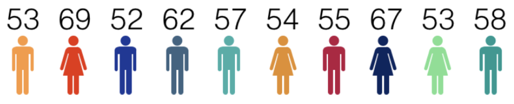

บทที่ 5 เวกเตอร์ (vectors)
ตัวแปรที่กล่าวถึงในหัวข้อที่ผ่านมาเป็นตัวแปรที่สามารถเก็บข้อมูลได้จำนวนหนึ่งค่าต่อตัวแปร โดยปกติใน R จะเรียกตัวแปรนี้ว่าตัวแปรสเกลาร์ (scalar) อย่างไรก็ตามในทางปฏิบัติ ตัวแปรสเกลาร์ยังมีประสิทธิภาพไม่เพียงพอที่จะรองรับการวิเคราะห์ข้อมูลที่มีตัวแปรและข้อมูลจำนวนมาก จึงมีความจำเป็นที่จะต้องมีตัวแปรที่สามารถเก็บข้อมูลได้มากขึ้น และมีโครงสร้างการเก็บข้อมูลที่มีความซับซ้อนขึ้น หากพิจารณาจากโครงสร้างการเก็บข้อมูลของตัวแปรใน R ดังกล่าว อาจจำแนกตัวแปรออกได้เป็น 3 ประเภทได้แก่ เวกเตอร์ (vectors) เมทริกซ์ (matrices) และชุดข้อมูล (dataframe) โดยหัวข้อนี้จะกล่าวถึงเวกเตอร์ก่อน รายละเอียดมีดังนี้
เวกเตอร์ คือตัวแปรที่มีโครงสร้างสำหรับจัดเก็บข้อมูลคล้ายตารางที่มีจำนวนหนึ่งคอลัมน์ กล่าวคือเวกเตอร์เป็นตารางที่มีมิติเท่ากับ \(n \times 1\) โดยที่ \(n\) คือจำนวนสมาชิกของเวกเตอร์ หากกำหนดให้ \(\textbf{u}\) คือเวกเตอร์ที่มีขนาด \(5 \times 1\) โดยที่ \(1,4,6,4\) และ \(8\) คือสมาชิกภายในเวกเตอร์ ในทางคณิตศาสตร์จะสามารถเขียนสัญลักษณ์แทนเวกเตอร์ \(\textbf{u}\) ได้ดังนี้
\[\textbf{u} = \begin{pmatrix} 1\\ 4\\ 6\\ 4 \\ 8 \end{pmatrix}_{n \times 1}\]
การสร้างเวกเตอร์
การสร้างเวกเตอร์ใน R สามารถทำได้หลายวิธี วิธีการพื้นฐานคือการสร้างเวกเตอร์โดยใช้ฟังก์ชัน <- ร่วมกับฟังก์ชัน concatenate c() ที่มีหน้าที่ต่อเชื่อมข้อมูลหลายค่าเข้าด้วยกันให้เป็นเวกเตอร์ ยกตัวอย่างเช่น สมมติว่าต้องการเก็บข้อมูลคะแนนสอบวิชาสถิติของนิสิตจำนวน 10 คน ที่มีข้อมูลดังรูปด้านล่าง ไว้ในเวกเตอร์ score สามารถเขียนคำสั่งได้ดังตัวอย่าง

score<-c(53,69,52,62,57,54,55,67,53,58) #create "score" vector
score #print score
## [1] 53 69 52 62 57 54 55 67 53 58จากตัวอย่างข้างต้นจะเห็นว่าการพิมพ์ชื่อของเวกเตอร์เป็นการเรียกดูสมาชิกทั้งหมดภายในเวกเตอร์นั้น เหมือนกับการเรียกดูตัวแปร ในกรณีที่ต้องการเรียกดูสมาชิกบางตัวภายในเวกเตอร์สามารถทำได้โดยใช้วิธีการอ้างอิงลำดับของสมาชิกที่ต้องการภายในเวกเตอร์นั้น โดยรูปแบบของคำสั่งประกอบด้วยชื่อของเวกเตอร์ที่เก็บข้อมูลแล้วตามด้วยเครื่องหมาย [i] โดยที่ i คือลำดับของสมาชิกที่ต้องการ ยกตัวอย่างเช่น จากเวกเตอร์ score หากต้องการเรียกดูคะแนนสอบของนิสิตคนที่ 3 สามารถเขียนคำสั่งเป็น score[3] หรือหากต้องการเรียกคะแนนสอบวิชาสถิติของนิสิตคนที่ 5, 6, ..., 9 สามารถเขียนคำสั่งเป็น score[5:9] ดังตัวอย่าง
score[3]
## [1] 52
score[5:9]
## [1] 57 54 55 67 53
ในกรณีที่สมาชิกที่ต้องการเรียกดูไม่ได้เรียงกันเป็นลำดับ เช่นต้องการเรียกคะแนนสถิติของนิสิตคนที่ 2, 5, 7 และ 10 สามารถเขียนคำสั่งได้ดังนี้
score[c(2,5,7,10)]
## [1] 69 57 55 58จากการอ้างอิงสมาชิกภายในเวกเตอร์ข้างต้น สามารถนำมาใช้ในการแก้ไขหรือเปลี่ยนแปลงข้อมูลภายในเวกเตอร์ได้อีกด้วย เช่น หากพบว่ามีการบันทึกคะแนนสอบวิชาสถิติของนิสิตคนที่ 6 มีความผิดพลาดและต้องแก้ไขให้มีค่าเท่ากับ 60 คะแนน สามารถทำได้ดังนี้
score[6]<-60
score
## [1] 53 69 52 62 57 60 55 67 53 58การดำเนินการของเวกเตอร์
การดำเนินการของเวกเตอร์ใน R อาจจำแนกเป็น 2 ลักษณะ ได้แก่ การดำเนินการระหว่างเวกเตอร์กับสเกลาร์ และการดำเนินการระหว่างเวกเตอร์กับเวกเตอร์ รายละเอียดมีดังนี้
การดำเนินการระหว่างเวกเตอร์กับสเกลาร์
โดยปกติการดำเนินการระหว่างเวกเตอร์กับสเกลาร์มักประกอบด้วย การบวก ลบ คูณ หาร ระหว่างเวกเตอร์กับสเกลาร์ โดยไม่ว่าจะเป็นการดำเนินการใดก็ตามจะเป็นการนำตัวเลขสเกลาร์ที่กำหนดไปดำเนินการกับสมาชิกทุกตัวภายในเวกเตอร์เช่น จากเวกเตอร์ score ข้างต้น สมมุติว่ามีการบันทึกคะแนนของนิสิตผิดพลาดไป โดยต้องแก้ไขใหม่โดยบวกคะแนนให้นิสิตทุกคน คนละ 2 คะแนน สามารถทำได้ดังนี้
score+2
## [1] 55 71 54 64 59 62 57 69 55 60การดำเนินการระหว่างเวกเตอร์กับเวกเตอร์
การดำเนินการระหว่างเวกเตอร์กับเวกเตอร์ หากเป็นการบวก ลบ คูณและหาร มีเงื่อนไขที่จำเป็นคือเวกเตอร์ทั้งสองที่นำมาดำเนินการนั้นจำเป็นที่จะต้องมีจำนวนมิติที่เท่ากัน และการดำเนินการดังกล่าวจะนำสมาชิกของเวกเตอร์ในตำแหน่งเดียวกันมาดำเนินการกันและได้ผลลัพธ์เป็นเวกเตอร์ใหม่ ยกตัวอย่างเช่น สมมุติว่ามีข้อมูลคะแนนสอบกลางภาค และปลายภาคของนิสิตจำนวน 5 คนดังตารางด้านล่าง
| midterm | final | |
|---|---|---|
| student1 | 70 | 70 |
| student2 | 62 | 64 |
| student3 | 56 | 47 |
| student4 | 64 | 60 |
| student5 | 56 | 62 |
จากข้อมูลข้างต้น สมมุติว่าต้องการสร้างเวกเตอร์ของคะแนนรวมจากคะแนนสอบกลางภาคและปลายภาค โดยกำหนดให้กับคะแนนสอบกลางภาคมีน้ำหนักเป็น 40% และคะแนนสอบปลายภาคมีน้ำหนักเป็น 60% สามารถทำได้ดังนี้
midterm<-c(70,62,56,64,56)
final<-c(70,64,47,60,62)
total<-0.4*midterm + 0.6*final
total
## [1] 70.0 63.2 50.6 61.6 59.6จะเห็นว่าคำสั่งข้างต้นมีการดำเนินการเช่นเดียวกับการดำเนินการทางคณิตศาสตร์ดังนี้
\[0.4 \times \begin{pmatrix} 70\\ 62\\ 56\\ 64\\ 56 \end{pmatrix}+0.6\times\begin{pmatrix} 70\\ 64\\ 47\\ 60\\ 62 \end{pmatrix}=\begin{pmatrix} (0.4)(70) + (0.6)(70)\\ (0.4)(62) + (0.6)(64)\\ (0.4)(56) + (0.6)(47)\\ (0.4)(64) + (0.6)(60)\\ (0.4)(56) + (0.6)(62) \end{pmatrix}\]
ในทำนองเดียวกับตัวแปรสเกลาร์ เวกเตอร์สามารถเก็บข้อมูลได้ทั้งที่เป็นตัวเลข ตัวอักษร และค่าความจริง โดยแต่ละเวกเตอร์จะสามารถเก็บข้อมูลได้ทีละประเภทเท่านั้น ไม่สามารถเก็บข้อมูลหลายประเภทไว้ภายในเวกเตอร์เดียวกันได้ ซึ่งทำให้สามารถจำแนกประเภทของเวกเตอร์ได้เป็น 3 ประเภท ตามลักษณะของข้อมูลที่จัดเก็บไว้ในเวกเตอร์ ได้แก่ เวกเตอร์ตัวเลข (numeric vector) เวกเตอร์ตัวอักษร (character vector) และ เวกเตอร์ตรรกะ (logical vector) ในตัวอย่างข้างต้นได้แสดงการสร้างเวกเตอร์ตัวเลขแล้ว ส่วนในกรณีของการสร้างเวกเตอร์ตัวอักษรสามารถทำได้ในทำนองเดียวกับการสร้างตัวแปรตัวอักษร กล่าวคือใช้ฟังก์ชัน <- ร่วมกับฟังก์ชัน c() โดยที่สมาชิกของเวกเตอร์แต่ละสมาชิกที่เป็นตัวอักษรหรือข้อความจะต้องอยู่ภายใต้เครื่องหมาย " " เช่นเดียวกับตัวแปรตัวอักษร ดังนี้
gender<-c("M","F","M","M","M","F","M","F","F","M")
gender
## [1] "M" "F" "M" "M" "M" "F" "M" "F" "F" "M"เวกเตอร์ตัวอักษรไม่มีคุณสมบัติการดำเนินการทางคณิตศาสตร์ ดังนั้นการนำเวกเตอร์ตัวอักษรมาดำเนินการทางคณิตศาสตร์จึงไม่สามารถทำได้ ผู้อ่านลองทดลองเขียนคำสั่ง gender+1 แล้วสังเกตผลลัพธ์ที่ได้
ในทำนองเดียวกันการสร้างเวกเตอร์ตรรกะ สามารถทำได้โดยการฟังก์ชัน <- ร่วมกับฟังก์ชัน concatenate c() และระบุสมาชิกภายในเวกเตอร์เป็นค่า TRUE หรือ FALSE เช่น logic<-c(T,T,F,F,T,F,T) นอกจากนี้ยังสามารถสร้างเวกเตอร์ตรรกะจากการใช้ตัวดำเนินการเชิงตรรกะ เช่น จากเวกเตอร์ score ข้างต้น หากกำหนดเกณฑ์ว่านิสิตที่จะสอบผ่านได้ต้องมีคะแนนรวม (total) ไม่น้อยกว่า 60 คะแนน การสร้างเวกเตอร์ result สำหรับเก็บผลประเมินดังกล่าวสามารถสร้างได้ดังนี้
score
## [1] 53 69 52 62 57 60 55 67 53 58
result<-score>=60
result
## [1] FALSE TRUE FALSE TRUE FALSE TRUE FALSE TRUE FALSE FALSE